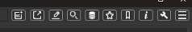
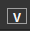

Installation
Zur Installation wird ein selbstentpackendes Archiv genutzt. Rufen Sie die install.exe auf. Es öffnet sich ein Installations-Dialog. Wählen Sie Ihre Sprache und wählen Sie ob für alle Nutzer oder nur für Sie installiert werden soll. Das hat lediglich Auswirkungen auf die Startmenü-Einträge die erstellt werden. Folgende Dateien und Verzeichnisse werden erstellt:
Bei für Alle Nutzer: In "WindowsDrive":/ProgramData/Microsoft/Windows/Start Menu/Programs/
Bei nur für Mich: In C:/Users/USERNAME/AppData/Roaming/Microsoft/Windows/Start Menu/Programs
In "WindowsDrive":/Users/USERNAME/AppData/Local/
In "WindowsDrive":/Programme/ :
In "WindowsDrive":/Programme/Schnipsel :
Systemanforderungen
Um den Quelltext selbst zu Kompilieren benötigen Sie:
Datenbank
Nach dem ersten Aufruf der Anwendung müssen Sie die Datenbank installieren / einrichten. Direkt auf der Startseite oder Sie klicken auf das linke Symbol in der oberen Menuleiste.
Für die Verbindung mit einer Datenbank benötigen Sie einen 64Bit ODBC-Treiber für den entsprechenden Server.
MySQL:
ODBC-Treiber Website
MariaDB:
SQLite:Für SQLite benötigen Sie als einziges keinen Server, jedoch einen ODBC-Treiber
Sie können die Datenbank-Zugangsdaten entweder über einen ODBC-DSN angeben oder direkt in der Anwendung.Wenn Sie ODBC-DSN nicht nutzen, geben Sie Ihre Daten in den entsprechenden Feldern ein.
Nach klicken auf 'Verbindung Testen' können Sie Benutzen wählen und die Verbindungsdaten werden bei jedem neuen Start der Anwendung genutzt.Sie können die Daten jederzeit über das Menü ändern.Nach erfolgreicher Verbindung klicken Sie auf Wiederherstellen. Sie werden gefragt ob sie die Schnipsel.Sql nutzen möchten. Beantworten Sie die Frage mit ja. Die Tabellen der Datenbank werden erstellt.Bitte bedenken Sie das jede neue Nutzung dieser Funktion die Datenbank überschreibt bzw. neu erstellt./P>
Backup:Sie können ein Backup der Datenbank erstellen. Klicken Sie auf Datenbank Backup und folgen Sie den Dialogen.
Wiederherstellen:Hier könne sie entweder den Ursprungszustand der Datenbank wiederherstellen oder ein Backup einspielen.Wenn Sie den Button klicken werden Sie gefragt ob Sie die Schnipsel.sql nutzen möchten.Wählen Sie nein, dann können Sie eine eigene bzw. Backup Datei auswählen.
Code-Sprachen / Menüpunkte anlegen / Bearbeiten
Um eine Neue Code-Sprache anzulegen, klicken Sie auf das links angezeigte Symbol im oberen Hauptmenu (das letzte Icon in der Grafik oben),und dort auf Code-Sprachen - Sprachen.
Es öffnet sich ein neuer Dialog.Geben Sie hier eine neue Sprache ein, und eine Kurzform die als Menupunkt im Linken Menu erscheint. z.B. 'Pascal' und 'Pas'.Klicken Sie auf Speichern.
Um eine Code-Sprache zu ändern klicken Sie ebenfalls auf das links angezeigte Symbol im oberen Hauptmenu (das letzte Icon in der Grafik oben),und dort auf Code-Sprachen - Sprachen. Es öffnet sich ein neuer Dialog.Wählen Sie im Abschnitt Ändern in der Liste den Eintrag den Sie ändern möchten. Die Werte werden automatisch in die Eingabefelder gesetzt, in denen Sie die Spracheund/oder die Kurzform ändern können. Klicken Sie auf Aktualisieren.
Um eine Code-Sprache zu löschen,klicken Sie ebenfalls auf das links angezeigte Symbol im oberen Hauptmenu (das letzte Icon in der Grafik oben),und dort auf Code-Sprachen - Sprachen.
Es öffnet sich ein neuer Dialog.Wählen Sie im Aschnitt Löschen in der oberen Liste den Eintrag den Sie löschen möchten. In der unteren Liste können Sie die Sprache wählen in die die Code-Einträgeder oberen Liste verschoben werden. Wenn Sie in beiden Listen denselben Eintrag wählen, werden alle Code-Einträge der zu löschenden Sprache ebenfalls gelöscht.Klicken Sie auf Löschen.
Schließen beendet die Bearbeitung der Code-Sprachen.
Code-Typen anlegen / Bearbeiten
Um einen Neuen Code-Typen anzulegen, klicken Sie auf das links angezeigte Symbol im oberen Hauptmenu (das letzte Icon in der Grafik oben),und dort auf Code-Sprachen - Typen.
Es öffnet sich ein neuer Dialog.Wählen sie in der Liste eine Code-Sprache. Geben Sie einen Typen ein. z.B. 'Funktion' oder 'Procedur'.Klicken Sie auf Speichern.
Um einen Code-Typ zu ändern klicken Sie ebenfalls auf das links angezeigte Symbol im oberen Hauptmenu (das letzte Icon in der Grafik oben),und dort auf Code-Sprachen -> Typen. Es öffnet sich ein neuer Dialog.Wählen Sie im Abschnitt Ändern in der Liste den Eintrag den Sie ändern möchten. Der Typ wird automatisch in das Eingabefeld gesetzt, in dem Sie den Typ ändern können.Klicken Sie auf Aktualisieren.
Um einen Code-Typen zu löschen,klicken Sie ebenfalls auf das links angezeigte Symbol im oberen Hauptmenu (das letzte Icon in der Grafik oben),und dort auf Code-Sprachen -> Typen.
Es öffnet sich ein neuer Dialog.Wählen Sie im Aschnitt Löschen in der oberen Liste den Eintrag den Sie löschen möchten. In der unteren Liste können Sie den Typen wählen in den die Code-Einträgeder oberen Liste verschoben werden. Wenn Sie in beiden Listen denselben Eintrag wählen, werden alle Code-Einträge des zu löschenden Typen ebenfalls gelöscht.Klicken Sie auf Löschen.
Schließen beendet die Bearbeitung der Code-Typen.

Sie können verschiedene Versionen eines Codes anlegen. Wollen Sie eine neue Version eines bereits angelegten Codes anlegen, Sehen Sie in Neue Code-Version anlegen nach.
Klicken Sie auf das links Symbol in der oberen Menuleiste.
Es öffnet sich ein neues Dialogfenster.Wählen Sie eine Code-Sprache und Code-Typen. Vergeben Sie einen Namen.Klicken Sie auf Speichern.
Der Edit-Modus wird aktiviert und es öffnet sich der Editor. Geben Sie Version und Author an.Fügen Sie den Code ein.
Klicken Sie zum Speichern auf das Disketten-Symbol über dem Editor.
Aktivieren Sie über das Linke Symbol in der oberen Menuzeile den Edit-Modus.
Navigieren Sie über das Linke Menu zu dem Code-Eintrag, für den Sie eine neue Version anlegen möchten. über dem Code befinden sich mehrere Symbole.
Klicken Sie auf das linke Symbol.
Der Editor wird aktiviert. Vergeben Sie eine Version, legen Sie einen Author fest und fügen Sie einen Code ein. Anschließend klicken Sie auf das Disketten-Symbol, um den Code zu speichern.

In der Code-Ansicht erscheint ein weiterer V-Button. Über diese V-Buttons können Sie zwischen den Versionen eines Codes wechseln.
Aktivieren Sie über das Linke Symbol in der oberen Menuzeile den Edit-Modus
Wählen Sie in der Code-Ansicht über die V-Buttons die Version des Codes,die Sie ändern wollen.
Klicken Sie auf das Linke Symbol über dem Code. Der Editor wird mit dem aktuellen Code gefüllt und aktiviert. Ändern Sie den Code und klicken Sie zum speichern auf das Disketten-Symbol.
Aktivieren Sie den Editor-Modus über das linke Symbol in der oberen Menuzeile.
Navigieren Sie zu dem Codeintrag den Sie Löschen möchten.
Klicken Sie auf das linke Symbol über dem Code um den aktuellen Code und alle Versionen davon zu löschen. Nur eine Version löschen
Aktivieren Sie über das linke Symbol in der oberen Menuzeile den Edit-Modus.
Navigieren Sie zu dem Code, von dem Sie eine Version löschen möchten.
Wählen Sie über die V-Buttons die Version die Sie Löschen möchten
Klicken Sie auf das linke Symbol über dem Code um die angezeigte Code-Version zu löschen. Löschen eines Codes und all seiner Versionen
Aktivieren Sie durch klicken auf das linke Symbol in der oberen Menuleiste den Export-Modus.
Navigieren Sie zu dem Code-Eintrag den Sie Exportieren möchten. In der Code-Ansicht klicken Sie auf das linke Symbol. Der Code wird als Grafik in die Exportliste eingefügt. Sie können so viele Codes einfügen wie Sie wollen. Beim Überfahren der Grafiken mit der Maus, wird der Name des Codes angezeigt. Um Einen Code aus der Liste zu entfernen, klicken Sie einfach die entsprechende Grafik an. Klicken Sie anschließend auf den entsprechenden Button, je nachdem in welches Format Sie Exportieren möchten.
Sie können dann einen Dateinamen und Pfad wählen.
Bei Export nach HTML werden die Optionen aus dem Einstellungen-Dialog übernommen, mehr unter Exportieren nach HTML.
Bei Export nach HTML können Sie Farben und Vorlagen in den Einstellungen wählen. Diese befinden sich im Verzeichnis Templates und und können von Ihnen editiert oder neu erstelltwerden. Es gibt ein paar Sachen zu beachten.